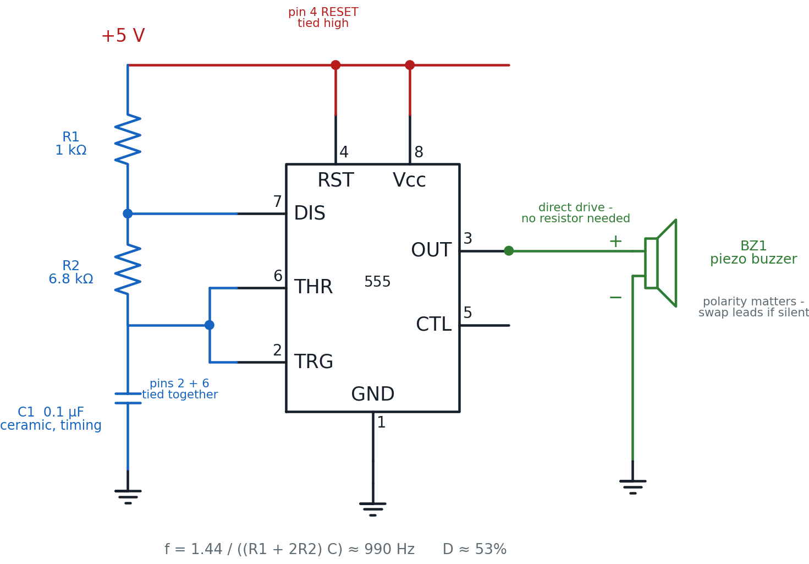
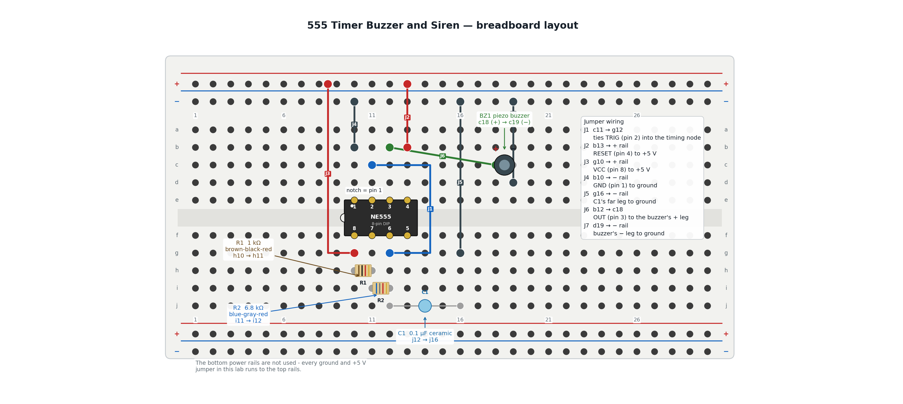

555 Timer Buzzer and Siren
Every circuit so far in this book has talked to your eyes. This one talks to your ears. Wire up eight resistor-and-capacitor values the way Chapter 14 taught you, and your circuit makes a sound you designed, not just a light you switched on.
Let's make some noise, builder!
 You already taught a 555 timer to blink. Now you're going to teach it to
sing — well, beep. Same chip, same timing formula, one different part on
pin 3. By the end you'll be able to bend that beep into a rising-and-falling
siren with nothing but a screwdriver. Let's light it up!
You already taught a 555 timer to blink. Now you're going to teach it to
sing — well, beep. Same chip, same timing formula, one different part on
pin 3. By the end you'll be able to bend that beep into a rising-and-falling
siren with nothing but a screwdriver. Let's light it up!
What You'll Learn
By the end of this lab you will be able to:
- Build a complete NE555 astable circuit that drives a piezo buzzer directly from pin 3
- Calculate the circuit's frequency and duty cycle from its resistor and capacitor values
- Explain why a buzzer can connect straight to pin 3 while an LED always needs a series resistor
- Diagnose a silent buzzer circuit by checking polarity, RESET, and the timing network in order
- Wire a potentiometer as a two-pin rheostat and use it to sweep the tone into a siren
Before You Start
| Time | 45 minutes |
| Difficulty | Intermediate — your second 555 build |
| You should already know | Chapter 14: The 555 Timer Chip and the "555 Buzzer Driver" section of Chapter 15: Shift Registers and IC Handling, including how to straddle a DIP chip across the center channel |
| Helpful background | Lab 45: 555 Timer LED Blinker builds the identical timing core with an LED instead of a buzzer. Building it first makes this lab faster, but every step here is also written to stand on its own. |
What You'll Need
Everything here is in the $50 kit. The trim potentiometer is only needed for the "Take It Further" siren at the end — the core buzzer circuit does not use it.
| Qty | Part | Value or marking | How to spot it |
|---|---|---|---|
| 1 | Breadboard | half-size, 30 columns | the white plastic board with rows of holes |
| 1 | 555 timer IC | NE555, 8-pin DIP | small black chip with a notch at one end |
| 1 | Resistor | 1 kΩ (R1) | tan body, bands brown-black-red, then gold |
| 1 | Resistor | 6.8 kΩ (R2) | tan body, bands blue-gray-red, then gold |
| 1 | Capacitor | 0.1 µF ceramic (C1) | small blue or tan disc, two straight leads, no + marking |
| 1 | Piezo buzzer | small two-lead buzzer (BZ1) | round black or metallic disc with a + marked lead |
| 7 | Jumper wires | assorted colors | for the seven connections in the build steps |
| 1 | Power supply | 5 V USB, or a 3×AA battery pack | any phone charger with a USB-A male-to-male cable |
| 1 | Potentiometer | 10 kΩ trim pot | small blue or black square/round trimmer with a screw slot — Take It Further only |
The IC is the one new part
 If you already built Lab 45, R1, C1, and your jumper-wire habits carry
straight over. R2 changes value, and the LED and its resistor are replaced
by one buzzer with no resistor at all. That swap is the whole lesson.
If you already built Lab 45, R1, C1, and your jumper-wire habits carry
straight over. R2 changes value, and the LED and its resistor are replaced
by one buzzer with no resistor at all. That swap is the whole lesson.
Safety First
At 5 volts, this circuit cannot hurt you. Every part on this board is safe to touch while it is running — that is exactly why we build at this voltage.
- Wire everything first, plug in power last. Every time, no exceptions.
- Unplug before you rewire. A wire moved while the board is live is how a short circuit happens — a path where current skips straight from + to − with nothing to slow it down.
- Check your buzzer's polarity before you insert it. Most small piezo buzzers only work one way round, marked with a + on one lead. Get it backwards and the circuit stays completely silent — no smoke, no damage, just silence.
Try It in the Simulator
Chapter 14's simulator covers exactly this circuit's astable timing. Set it up before you touch a single wire.
Dial in R1 = 1 kΩ, R2 = 6.8 kΩ, and C = 0.1 µF — the same three values you are about to wire for real. Watch the frequency readout land close to 990 Hz, solidly in the range your ears can hear.
One honest limitation: this simulator is silent. It shows you the waveform and the frequency number, but it cannot play the tone. Hearing an actual 990 Hz beep is the payoff you only get by building the real circuit — which is exactly what you're about to do.
The Circuit Diagram
Here is the same circuit drawn the way engineers draw it.

Trace the loop the way current flows: +5 V feeds pin 8 (VCC) and pin 4 (RESET) directly. R1 and R2 step down from +5 V through pin 7 (DISCHARGE) to the joined pins 2 and 6, where C1 charges and discharges against ground, setting the timing. Pin 3 (OUTPUT) is a separate signal — it switches high and low at the frequency that timing network sets, and that switching signal goes straight to the buzzer.
Same chip, new job for pin 3
 In Lab 45, pin 3 pushed current through a resistor and an LED. Here it
pushes current through a buzzer with nothing else in the way. Pin 3
doesn't know or care what's listening to it — Chapter 15 called this the
"it doesn't care what's listening" idea, and this is that idea in action.
In Lab 45, pin 3 pushed current through a resistor and an LED. Here it
pushes current through a buzzer with nothing else in the way. Pin 3
doesn't know or care what's listening to it — Chapter 15 called this the
"it doesn't care what's listening" idea, and this is that idea in action.
The Breadboard Layout
Now the same circuit built on an actual board. This is the picture to copy, hole by hole.

The 555 straddles the center channel so its two rows of pins land in two separate hole groups: pins 1-4 in row e (columns 10-13), and pins 5-8 mirrored in row f (columns 10-13). The notch on the chip's left edge marks pin 1.
| In the schematic | On the breadboard |
|---|---|
| Pin 1 GND | e10, grounded through jumper J4 |
| Pin 2 TRIGGER | e11, tied into the timing node through jumper J1 |
| Pin 3 OUTPUT | e12, wired to the buzzer's + leg through jumper J6 |
| Pin 4 RESET | e13, tied to +5 V through jumper J2 |
| Pin 6 THRESHOLD | f12, part of the timing node |
| Pin 7 DISCHARGE | f11, between R1 and R2 |
| Pin 8 VCC | f10, tied to +5 V through jumper J3 |
| R1, 1 kΩ | the resistor bridging h10 to h11 |
| R2, 6.8 kΩ | the resistor bridging i11 to i12 |
| C1, 0.1 µF | the capacitor bridging j12 to j16, grounded through J5 |
| BZ1, the buzzer | c18 (+) and c19 (−), grounded through J7 |
Build It
Work down the list in order. The timing network goes in first, then power and ground, then the buzzer last — so nothing is live while you're still placing parts.
- Leave the power unplugged. Do not connect the USB supply yet.
- Orient the NE555 so its notch points toward column 9, then straddle it across the center channel at columns 10-13. Pin 1 lands in e10, pin 2 in e11, pin 3 in e12, and pin 4 in e13. Pins 8, 7, 6, and 5 fall into place automatically in f10 through f13.
- Bridge R1 (1 kΩ, brown-black-red) from h10 to h11.
- Bridge R2 (6.8 kΩ, blue-gray-red) from i11 to i12. Its left leg shares column 11 with R1's right leg — that's the DISCHARGE connection, with no extra wire needed.
- Bridge C1 (0.1 µF ceramic) from j12 to j16. C1 has no polarity — either lead can go in either hole.
- Run jumper J1 from c11 to g12. This ties pin 2 (TRIGGER) into the same node as pin 6, R2's right leg, and C1.
- Run jumper J5 from g16 to the top − rail. This grounds C1's far leg.
- Run jumper J4 from b10 to the top − rail. This grounds pin 1.
- Run jumper J2 from b13 to the top + rail. This ties pin 4 (RESET) high.
- Run jumper J3 from g10 to the top + rail. This powers pin 8 (VCC).
Stop here and check the buzzer before it goes in.
 Find the + marking on your buzzer's case or lead. Most small piezo
buzzers only make sound one way round. Get it backwards and nothing bad
happens — but nothing happens at all, which can look exactly like a wiring
mistake somewhere else. Check it now and save yourself a hunt later.
Find the + marking on your buzzer's case or lead. Most small piezo
buzzers only make sound one way round. Get it backwards and nothing bad
happens — but nothing happens at all, which can look exactly like a wiring
mistake somewhere else. Check it now and save yourself a hunt later.
- Insert the buzzer with its + lead in c18 and its other lead in c19.
- Run jumper J6 from b12 to c18. This connects pin 3 (OUTPUT) straight to the buzzer's + leg — no resistor.
- Run jumper J7 from d19 to the top − rail. This grounds the buzzer's other leg.
- Checkpoint — before power. Trace the loop out loud: +5 V rail → J2 and J3 → pins 4 and 8. Ground rail → J4, J5, and J7 → pins 1, C1, and the buzzer. Pin 3 → J6 → the buzzer's + leg. If any link in that chain has nothing plugged into it, find the gap now.
- Predict first. Before you plug in power, write down a guess: will you hear anything, and if so, roughly how high or low do you expect the pitch to be?
- Plug in the 5 V supply. You should hear a steady tone immediately — close to 990 Hz, a clear, continuous beep rather than individual clicks.
You are done when the buzzer sounds a steady tone the instant you connect power, and you can point to which part of the board sets that tone's pitch.
You built a sound!
 That beep is a signal you designed on purpose — not a toy that came with a
fixed tone baked in. Change R1, R2, or C1, and you change the pitch. That's
your superpower in action!
That beep is a signal you designed on purpose — not a toy that came with a
fixed tone baked in. Change R1, R2, or C1, and you change the pitch. That's
your superpower in action!
How It Works
Pin 3 doesn't know what's connected to it — it just switches between high and low at whatever rate R1, R2, and C1 tell it to. In Lab 45, that switching pattern was slow enough to see as a blink. Here, the same kind of pattern runs thousands of times a second, fast enough that instead of seeing it blink, you hear it as a tone.
Frequency
Plug in this circuit's values — R1 = 1,000 Ω, R2 = 6,800 Ω, C = 0.0000001 F (0.1 µF):
990 cycles per second lands solidly in the range of an alarm clock beep or a microwave's "done" chime — well within what your ears pick up easily.
Duty Cycle
The output spends slightly more than half of each cycle high. At 990 cycles a second your ear can't hear that small asymmetry — it just hears one steady pitch.
Why the buzzer skips the resistor an LED always needs
An LED is a diode: give it more voltage than it wants and it draws far more current than it can survive, which is exactly why Lab 10 and Lab 45 both needed a resistor standing guard. A small piezo buzzer is a completely different kind of part. It's built from a piezoelectric disc that flexes when voltage is applied, and it draws only a few milliamps — nowhere close to the roughly 200 mA the 555's output pin can safely supply. There's no current surge to limit, so there's nothing for a resistor to protect against.
Where you've heard this
 A microwave's "your food is ready" beep, a seatbelt reminder chime, a
smoke detector's chirp — nearly all of them are a small piezo buzzer driven
by a timing circuit just like this one, tuned to a frequency someone
picked on purpose.
A microwave's "your food is ready" beep, a seatbelt reminder chime, a
smoke detector's chirp — nearly all of them are a small piezo buzzer driven
by a timing circuit just like this one, tuned to a frequency someone
picked on purpose.
When It Doesn't Work
Work down this list in order — check power and polarity before you suspect anything more complicated.
| What you hear | Likely cause | Fix |
|---|---|---|
| Nothing at all | Buzzer wired backwards | Check the + mark on the buzzer and swap its leads between c18 and c19 — this is the single most common reason the circuit stays silent |
| Nothing at all | RESET (pin 4) not tied high | Confirm jumper J2 runs from b13 to the + rail; a floating RESET holds the output permanently low |
| Nothing at all | Power not reaching the rails | Check the USB supply is plugged in and that J2 and J3 are both fully seated on the + rail |
| Individual clicks instead of a steady tone | R2 or C1 in the wrong holes, or the wrong value | A far larger R2 or C1 slows the cycle down enough that you hear separate clicks rather than a tone — recheck i11 → i12 and j12 → j16 |
| Still nothing, everything above checks out | 555 inserted backward | Confirm the notch points toward column 9 and pin 1 lands in e10, not e13 |
| Faint buzz or nothing, buzzer gets warm | A buzzer leg landed in the wrong column | Both buzzer legs must be in different column groups; both in the same column shorts the buzzer out |
Silence is data, not a disaster
 A silent 555 circuit almost never means a burned-out part — 5 V circuits
like this one don't damage parts that are simply backwards or
disconnected. Work the table above from the top, change one thing at a
time, and you'll find it.
A silent 555 circuit almost never means a burned-out part — 5 V circuits
like this one don't damage parts that are simply backwards or
disconnected. Work the table above from the top, change one thing at a
time, and you'll find it.
Check Your Understanding
Answer each one before you open it.
1. Using f = 1.44 / ((R1 + 2R2) C), what frequency does R1 = 1 kΩ, R2 = 6.8 kΩ, C = 0.1 µF produce?
That's the tone this lab's circuit actually makes — a clear, audible beep.
2. What is this circuit's duty cycle, and does your ear notice it?
The output is high for 53% of each cycle instead of a perfectly even 50%, but at 990 cycles a second that tiny asymmetry is far too fast for your ear to separate from a steady tone.
3. Your circuit is wired exactly like the diagram, power is connected, but the buzzer stays completely silent. What's the first thing to check, and why?
The buzzer's polarity. Most small piezo buzzers only sound when wired the right way round, and a reversed buzzer produces no warning — just silence that looks identical to a dozen other possible mistakes. Checking polarity first is fast and rules out the most common cause immediately.
4. Why can the buzzer connect directly to pin 3 with no series resistor, when every LED in this book has needed one?
An LED is a diode that draws runaway current once its forward voltage is exceeded, so a resistor has to stand in the way to limit that current. A small piezo buzzer works on a completely different principle — it flexes under voltage and draws only a few milliamps, far under the roughly 200 mA the 555's output can safely supply. There's no current surge to limit, so there's nothing for a resistor to protect against.
5. Predict: if you swapped C1 for a 1 µF capacitor — ten times larger than the 0.1 µF you wired — what would happen to the pitch, and why?
C appears in the denominator of the frequency formula, so multiplying it by 10 divides the frequency by roughly 10:
99 Hz is low enough that the tone would sound more like a low buzz or rumble than the original beep — and pushed much lower still, it would stop sounding like a tone at all and become individual clicks, the same thing that happens with a very large R2.
6. In the "Take It Further" siren, turning the trim pot's screw to increase R2 makes the pitch go lower, not higher. Use the frequency formula to explain why.
R2 sits in the numerator's "(R1 + 2R2)" term, which is in the denominator of the whole frequency formula. Increasing R2 makes that denominator larger, and dividing 1.44 by a larger number gives a smaller result — a lower frequency, which your ear hears as a lower pitch. The relationship runs the opposite way from what many people guess: more resistance means a slower cycle, not a faster one.
Take It Further
Challenge: turn the fixed tone into a siren.
Right now R2 is a fixed 6.8 kΩ resistor, so the pitch never changes. Replace it with the kit's 10 kΩ trim potentiometer, wired as a rheostat instead of the three-pin voltage divider you used in the Dark Detector lab.
A rheostat wiring only uses two of the pot's three pins: the wiper (the center pin, connected to the sliding contact) and one outer pin. The third pin is left completely disconnected. Resistance is measured only between those two connected pins, and turning the adjustment screw slides the wiper between them — exactly the variable resistor R2's job calls for. This is different from the Dark Detector, where all three pins were used to split a voltage; here, only two pins are used to vary a resistance.
To build it: remove R2 from i11 → i12. Insert the trim pot so its wiper pin lands in i11 (the DISCHARGE net) and one outer pin lands in i12 (the timing node). Leave the pot's other outer pin unconnected.
With the circuit powered, gently turn the pot's adjustment screw with a small screwdriver. Turning it changes R2 anywhere from near 0 Ω up toward its full 10 kΩ, which sweeps the frequency formula's result across a wide range:
| R2 (from the pot) | Frequency |
|---|---|
| near 0 Ω | roughly 13,000 Hz — a high, thin whistle |
| 6.8 kΩ (matches the fixed resistor) | ≈ 990 Hz — the original tone |
| 10 kΩ (full turn) | ≈ 690 Hz — noticeably lower than the original tone |
You have succeeded when you can turn the screw and hear the pitch audibly rise and fall like a siren, and you can explain — using the formula, not just "turn it and see" — why a larger R2 always produces a lower pitch.
Small, careful turns
Trim pots are built for occasional adjustment with a screwdriver, not
constant twisting by hand. Turn it slowly, listen for the pitch to move,
and stop anywhere in the range that sounds good to you.
If that was easy, try this: swap C1 for a different value from the kit (a 1 µF or a 10 µF capacitor both work) and recompute the frequency range the siren now covers. A bigger C1 shifts the whole siren's range lower — see if you can predict roughly how much lower before you power it up.
Learn More
- Chapter 14: The 555 Timer Chip — the pin-by-pin tour and the frequency and duty-cycle formulas this lab builds from
- Chapter 15: Shift Registers and IC Handling — see the "555 Buzzer Driver" section for the exact wiring this lab is built on, plus general IC-handling skills
- Lab 45: 555 Timer LED Blinker — the same timing core driving an LED instead of a buzzer, worth comparing side by side
- Chapter 19: Driving Outputs — Motors, Buzzers, and More — active vs. passive buzzers, and why this lab's buzzer needs a driving signal to make any sound at all
- SparkFun: 555 Timer Basics — a deeper outside tutorial on astable and monostable 555 wiring, with real oscilloscope traces